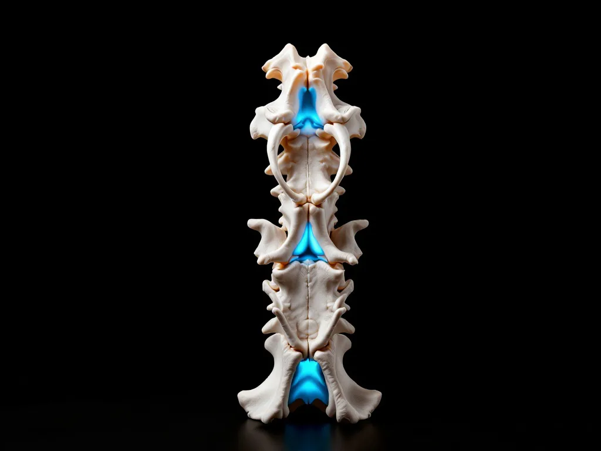

Neck and upper back pain after a crash
This page is general information, not medical advice. An examination is needed to know whether we can help you.
What we look for on examination, what treatment involves, and how care is paid for.
What a collision does to the neck and upper back
Your head weighs enough to matter, and in a collision it gets thrown and then checked by the seat and the belt. Meanwhile your hands are usually on the wheel and your shoulders are braced. The muscles between the shoulder blades take that bracing load. The small joints and the discs of the neck and upper back, the cushions between the vertebrae and the paired joints behind them, get compressed and then stretched inside a second.
So the structures involved are the muscles and ligaments that hold the area, the discs, and those small joints. All three can hurt, and they do not all hurt in the same way.
The point this page exists to make: the nerves that serve your arm and hand leave the spine in your neck. That is why an injury up here often shows up as numbness, tingling, coldness or a dull ache in the arm rather than as neck pain at all. People arrive convinced they have a hand problem. Frequently they do not.

If your neck pain started in a rear-end collision, start with whiplash instead. The section below on whether this is whiplash explains why.
Is this whiplash, or something else?
Worth two minutes, because these are genuinely different pages and one of them will suit you better.
Read the whiplash page if: your head was thrown backward and then forward. A rear-end impact is the usual way that happens. Whiplash is the specific injury that mechanism causes, and that page goes further on timing, on examination and on how the injury is documented. Whiplash treatment
Stay here if: the impact came from the side, or you were braced or twisted at the moment it happened, or your complaint is between the shoulder blades rather than in the neck, or the main thing you notice is in your arm and hand while the neck itself feels reasonably fine.
If you cannot tell, it is not a problem. It is a question the examination answers, and both pages lead to the same practice.
What the examination covers
Movement and orthopedic testing of the neck and upper back.
How far each part moves, what reproduces your pain, and whether the restriction is in the neck, the thoracic spine, or the muscles across the shoulder blades. Degrees measured on the day, written down, rather than an adjective recalled later.
Neurological screening of the arms and hands.
Reflexes, sensation and grip strength. This is where a neck injury declares itself, and where an arm symptom is either confirmed as nerve-related or is not. If that is the picture, this page goes further: pinched nerve
Imaging only if it is indicated.
X-rays may be recommended, and they are optional. What they cost and the shielding we use are stated together in one block on the page that owns them: your first visit
Examination findings are written down as findings, and we will speak with your attorney about your care.

What care involves, and what it does not
01
Settle the irritation.
An acutely inflamed neck resists everything. First job is getting it to the point where treatment is tolerable.
02
Soft-tissue work through the shoulder-blade and neck musculature.
This region holds guarding tension longer than most, and the muscles between the shoulder blades are usually the part nobody has touched.
03
Graded movement.
Reintroduced in steps, and adjusted to what the neck actually does rather than to a protocol.
04
Spinal manipulation to the neck and upper back, once it is tolerated.
A controlled movement applied by hand to a joint that is not moving well. We tell you what we are going to do before we do it, and we skip it while the area is too irritated for it.
05
Home instructions.
Positioning at a desk and in a car, and what to do when the arm symptoms flare in the evening.
Painkillers manage the pain, and there are days you will want them. Our work is on the mechanical injury underneath. Both have a place and for some injuries you need both. If the examination points to a fracture, a head injury, or a nerve injury that needs imaging we do not perform, we say so and tell you who to see. We will describe that process plainly and we will not imply a formal network of specialists we cannot name.
Why the first days matter
Neck and upper-back symptoms after a collision very often begin hours or days later, because adrenaline does its job at the scene. Arm numbness and tingling in particular tend to get noticed once the acute stiffness sets in and you start trying to use the arm normally again.
The interval between the crash and your first examination is an interval with nothing in your medical record. The record is what a claim rests on, and a stretch of it that is blank is a stretch you will be asked about.
That is the case for being examined sooner. It is an argument about your file, not a statement about our schedule. What to do after a crash

What it costs, and who pays
Before we examine you, you get a written Good Faith Estimate: what it covers, what would be billed separately, and who owes what.
Five routes fund care after a collision, and they are resolved in one place rather than spread across the site: MedPay on your own policy; the at-fault driver's liability cover; your own uninsured or underinsured motorist cover; a lien against the personal-injury settlement; or self-pay. How care is paid for
The third of those is the one no local practice seems to mention, so it has a page of its own: when the other driver is uninsured
Care here runs on a lien. You are billed nothing while the case is open, and we are paid from the settlement. If the case is not accepted, is lost, or settles for less than the bill, the balance is written off in full and you owe nothing.
What we can honestly show you
No recovery rates, no success percentages, no star ratings. We do not hold outcome data for this injury, so we have nothing honest to put in that space.
The page that stood here before said the pain was caused by posture, stress and a practitioner's term for a contested idea, quoted an uncited figure about how much a human head weighs, and asked you to call so we could take the pain away, all before anyone had examined anything, and without mentioning a car once. The owner's instruction on claims of that kind, given in 2026, was to drop all of them.
Results are not guaranteed and may vary from person to person. Individual results vary. These reviews describe one patient's experience and are not a prediction of your outcome.
Patient reviews, published under the parent-brand name: what patients have written
Questions people actually ask
My arm is numb but my neck feels fine. Is that related?
It can be. The nerves that serve the arm leave the spine in the neck, so an injury there can present as an arm symptom with very little neck pain. The neurological screen described below is what sorts that out.
Is this whiplash?
Possibly, and it changes which page is more use to you. If your head was thrown backward and then forward, usually in a rear-end impact, read that page. The whiplash page
It started four days after the crash. Is it too late to be examined?
No. Late onset is the normal pattern here. The reason to be examined sooner is the record, not a deadline.
How much is the first visit?
We put it in writing before we examine you, so you see the number before you agree to anything. That is what the Good Faith Estimate is for. The written estimate
We will tell you what care would cost before we examine you.